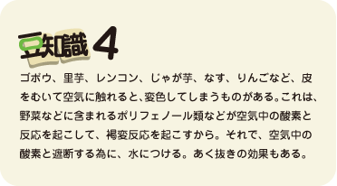
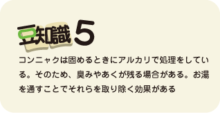

[応用]
ダシと味噌さえ抑えておけば、あとは豆腐やなめこの代わりに、いろいろな具を入れ替えればレパートリーが増えていく。有り合わせでもいいし、好みや、季節に合わせてアレンジするといい。ただし、具には少々相性がある。食材にも個性があるので、それを使い分けるという訳だ。大根やかぶはみそ汁に合う野菜だが、それだけだとちょいと物足りない。そこに油揚げなどが加わると、油が旨味と滑らかさを加えてくれる。ただし、油揚げは熱湯で油抜きしてから使った方が油っぽくなくていい。わかめも、ダシが出て旨味が増す。具沢山のみそ汁は、素材からも旨味が出るので味の相乗効果をもたらしてくれる。また、栄養的にも品目が多い分豊かになる。けんちん汁や豚汁などがその例だ。しじみやあさりのみそ汁は、貝からダシがとれるので、ダシは使わなくてもよい。まあ、とにかく、いろいろやってみる事が一番だ。
butajiru写真：豚汁
とん汁（２人分）
- 材料
- 豚もも薄切り ５０ｇ
- 人参 ３０ｇ
- 大根 ８０ｇ
- ごぼう ２０ｇ
- ねぎ ２０ｇ（１/4本）
- 里芋 ５０ｇ
- 油揚げ １/２枚
- コンニャク ５０ｇ（１/4枚）
- みそ ２０ｇ
- ダシ ３００ｍｌ
[作り方]
①豚肉は１ｃｍ幅に、大根、人参はいちょう切り、ねぎは５ｍｍ幅の小口切り。
②ごぼうは半月切り、里芋は皮をむき一口大にして、どちらも水にさらす。
③コンニャクは一口大に切り、湯に通す。
④ダシを加熱し、ねぎ以外の材料を加えて煮る。時々、あくをすくう。
⑤里芋に竹串を通し、やわらかくなったら、ねぎを加え、みそを入れて火を止める。
